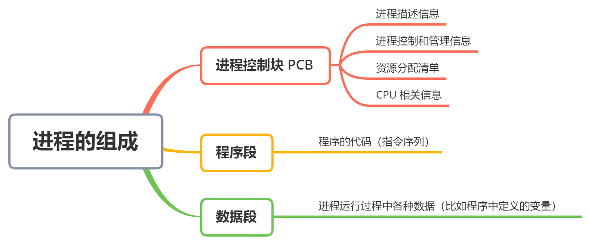
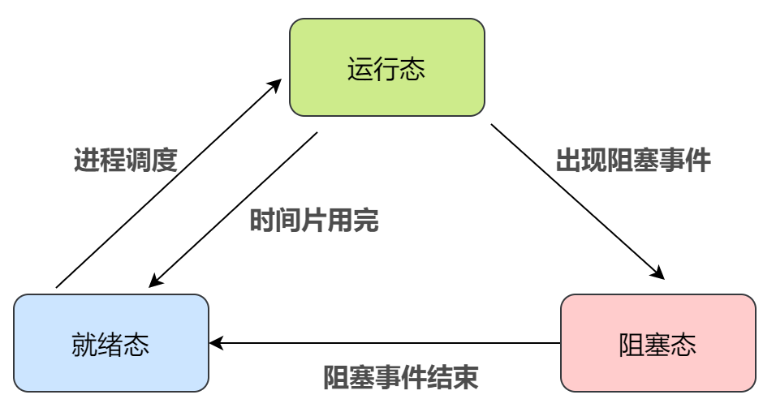
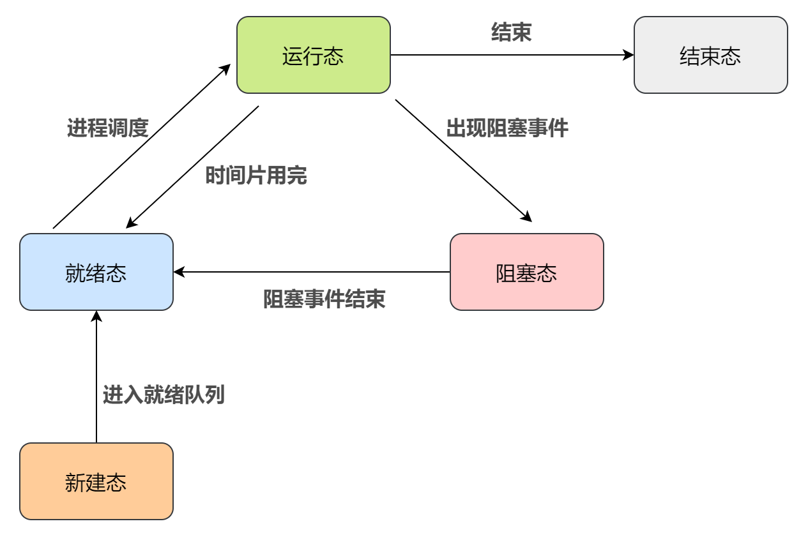
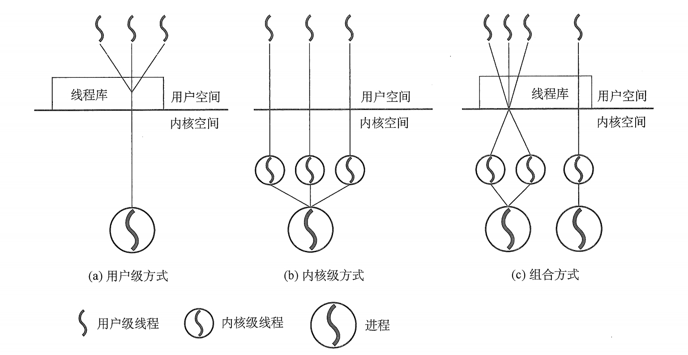

进程与线程基础知识|操作系统
进程|Process
在多道程序系统中，程序的执行过程会出现一些新的特点：程序间的相互制约性、随机性、资源共享、速度有关性等。而这些相关特性是不可预知的，以静态的程序作为单位对其进行资源分配显然并不合理，因此必须引入新的概念用于描述程序段执行的过程以及共享资源，而这就是进程的提出。
进程（ Process ）是一个可以并发执行的程序/程序段在一个数据集合上的执行过程，它是系统分配资源的基本单位。
系统通过进程控制块（Process Control Block，PCB）这样一个数据结构来描述进程的基本情况和运行状态，从而对进程进行控制与管理。
相应的，一个进程实体或映像=程序段+数据段+PCB。
所以，创建进程其实是创建一个进程映像的PCB，撤销进程则是撤销PCB。

特别注意：在计算机中，PCB是进程存在的唯一标志！
进程的特征与组成
动态性：进程的实质是程序的一次执行过程，有着创建、活动、暂停、终止等过程，是动态产生，动态消亡的。动态性是进程最基本的特征。
并发性：任何进程都可以同其他进程一起并发执行。并发性是进程的重要特征，也是操作系统的重要特征。
独立性：进程是一个能独立运行的基本单位，同时也是系统分配资源和调度的独立单位。没有建立 PCB 的程序都不能作为一个独立单元参与执行。
异步性：由于进程间的相互制约，使进程具有执行的间断性，即进程按各自独立的、不可预知的速度向前推进。异步性会导致执行结果的不可再现，因此操作系统还需配置相应的进程同步机制。
结构性：进程由程序、数据和 PCB 三部分组成。
进程的状态
尽管每一个进程都是独立的实体，有其自己的 和内部状态，但是进程之间经常需要相互作用。一个进程的输出结果可能是另一个进程的输入。假设进程 A 的输入依赖进程 B 的输出，那么在进程 B 的输出结果没有出来之前，进程 A 就无法执行，它就会被阻塞。这就是进程的阻塞态。
对进程的状态，常见的有两种模型，分别是三态模型和五态模型。
三态模型
- 运行态（running）：进程占有 CPU 正在运行。在单核系统下，每个时刻最多只有一个进程处于运行态。
- 就绪态（ready）：进程获得了除处理机外的一切所需资源，具备运行条件，等待系统分配 CPU 以便运行。系统中处于就绪态的进程可能有多个，通常将他们排列成一个队列，称为 就绪队列。
- 阻塞态 / 等待态（wait）：进程需要等待某一事件或除处理机外的其他资源，从而不具备运行条件时，该进程不能得以运行，从运行态转为阻塞态。阻塞态的进程也根据阻塞原因的不同被系统分配至多个阻塞队列。

需要注意的是：阻塞态是由于缺少需要的资源从而由运行态转换而来，但是该资源不包括 CPU 时间片，缺少 CPU 时间片会从运行态转换为就绪态。
注：如果进程调度出现了剥夺现象，就绪态的进程是有可能因为“阻塞”转化为阻塞态的，这样甚至可以更加提升CPU的利用率，但是最终在操作系统的设计上并没有采用，这是因为如果这样转化，程序会出现风险。
五态模型
很多系统中都增加了新建态（new）和终止态（exit），形成五态模型：
- 新建态（new）：进程正在被创建时的状态，尚未转入就绪态。
- 终止态（exit）：进程正在从系统中消失时的状态

上文说过，PCB 是提供给操作系统使用的，是操作系统管理进程的主要依据。因此上述两种模型的状态转化就是通过PCB来管理实现的。一般来说，操作系统会把处于同一状态的所有进程的 PCB 链接在一起，这种数据结构就称为进程队列（Process Queue）。
进程的控制
进程创建时（创建原语），操作系统为其新建一个 PCB，该结构此后常驻内存，任意时刻都可以存取，并且在进程结束后删除；
进程执行时，系统通过 PCB 了解进程当前的状态信息，以便 OS 对其进行控制和管理；
进程结束时（终止原语），系统收回其 PCB，该进程也随之消亡。
进程还可以通过阻塞原语（Block）使自己由运行态变为阻塞态，可见阻塞是基础自身的一种主动行为。与之必须成对使用的另一个原语是唤醒原语（Wakeup），将进程唤醒以从阻塞态变到就绪态。
进程控制块
不难发现，系统总是通过 PCB 对进程进行管理，即 PCB 是系统感知进程存在的唯一方式。

程序段与数据段
程序段就是能被进程调度程序调度到 CPU 执行的程序代码段。注意，程序可被多个进程共享，即多个进程可以运行同一个程序。
一个进程的数据段，可以是进程对应的程序加工处理的原始数据，也可以是程序执行时产生的中间或最终结果。
C 语言编写的程序在使用内存时一般分为三个段：正文段（即代码和赋值数据段）、数据堆段和数据栈段。
二进制代码和常量存放在正文段，动态分配的存储区在数据堆段，临时使用的变量在数据栈段。
进程的通信
在操作系统中，进程是竞争和分配计算机系统资源的基本单位。所以每个进程都有自己独立的地址空间，为了保证多个进程彼此互不干扰地共享物理内存，操作系统利用硬件机制对地址空间进行严格的保护。
要实现进程之间的通信，必须借助系统调用函数实现。实现通信的方式有：管道、消息传递、共享内存、文件映射、套接字等
共享内存区
通过系统调用创建共享内存区，多个进程可通过系统调用连接同一个共享内存区，以此实现进程间的数据交换。
在对共享空间进行读/写操作时，需要使用同步互斥工具（如信号量 PV操作）进行控制。
注：进程内的线程是自然共享进程空间的。
消息传递
在消息传递系统中，进程间的数据交换以格式化消息(Message)为单位。进程间通过系统提供的发送消息和接收消息两个原语进行数据交换。
当进程发送消息时，系统将消息从用户缓冲区复制到内核缓冲区，然后将消息缓冲区挂入消息队列。进程发送的消息保持在消息队列中，直到被另一进程接受。
当进程接收消息时，系统从消息队列中解挂消息缓冲区，将消息从内核的消息缓存区中复制到用户缓冲区，然后释放消息缓存区。
管道通信
管道通信是一种特殊的消息传递方式。
所谓“管道”，是指用于连接一个读进程和一个写进程以实现他们之间通信的一个共享文件，又名 pipe 文件。
管道是先进先出 FIFO 的信息流，允许多个进程向管道写入数据，允许多个进程读出数据。缓冲区只允许一边写入而另一边读出，只要缓冲区有数据，进程就能从中读出而不必担心其他进程在其中进行写操作而遭到阻塞，因为写进程会把缓冲区先写满然后才让读进程读。当缓冲区还有数据时，写进程不会往缓冲区写数据。所以，这也决定了管道通信是半双工通信。
注：要实现父子进程互动通信，需要定义两个管道。
线程|Thread
早期的操作系统都是以进程作为独立运行的基本单位的，直到后期计算机科学家们又提出了更小的能独立运行的基本单位，也就是线程。
引入进程是为了更好地使用多道程序并发执行，提高资源利用率和系统吞吐量；而引入线程则是为了减小程序在并发执行时所付的时空开销，提高操作系统的并发性能。
线程（Thread）是操作系统能够进行运算调度的最小单位。它被包含在进程之中，是进程中的实际运作单位。
一个进程中可以并发多个线程，每条线程并行执行不同的任务。
引入线程前，进程是资源分配和独立调度的基本单位。
引入线程后，进程是资源分配的基本单位，线程是独立调度的基本单位。
线程的特点
在多线程操作系统中，每个线程都是作为利用CPU的基本单位，是花费最小开销的实体。线程具有以下属性。
轻量型实体
线程中的实体基本上不拥有系统资源，只是有一点必不可少的、能保证独立运行的资源。
线程的实体包括程序、数据和 TCB 。线程是动态概念，它的动态特性由线程控制块（Thread Control Block，TCB）描述。
TCB的内容
（1）线程标识符；
（2）线程运行状态；
（3）优先级；
（4）一组寄存器，包括程序计数器、状态寄存器和通用寄存器；
（5）线程专有存储区，线程切换时用于保存现场等；
（6）堆栈指针，用于过程调用时保存局部变量及返回地址等。
独立调度
操作系统能够进行运算调度的最小单位就是线程，而且由于线程很“轻”，故线程的切换非常迅速且开销小。
可并发性
在一个进程中的多个线程之间，可以并发执行，甚至允许在一个进程中所有线程都能并发执行；
同样，不同进程中的线程也能并发执行，充分利用和发挥了CPU与外围设备并行工作的能力。
共享进程资源
在同一进程中的各个线程，都可以共享该进程所拥有的资源，这首先表现在：
所有线程都具有相同的地址空间（即进程的地址空间），所以线程可以访问该地址空间的每一个虚地址；
此外，还可以访问进程所拥有的已打开文件、定时器、信号量机构等。所以线程之间互相通信不必调用内核。
与进程的区别
1）地址空间和其它资源（如打开文件）：进程间相互独立，同一进程的各线程间共享。某进程内的线程在其它进程不可见；
2）通信：进程间通信IPC，线程间可以直接读写进程数据段（如全局变量）来进行通信——需要进程同步和互斥手段的辅助，以保证数据的一致性；
3）调度和切换：线程上下文切换比进程上下文切换要快得多；
4）在 多线程OS 中，进程不是一个可执行的实体；
5）被终止但尚未释放资源的线程仍可被其他线程调用，以使其重新恢复运行。
线程的实现
线程的实现可以分为两类：用户级线程（User-Level Thread，ULT）和内核级线程（Kernel-Level Thread，KLT），内核级线程又称 内核支持的线程。
用户级线程ULT
在ULT中，有关线程的创建、撤销和切换等管理工作都是由应用程序通过线程库设计完成，内核并不会意识到有线程的存在。
用户级线程的实现与操作系统平台无关，对线程管理的代码是属于用户程序的一部分。
内核级线程KLT
在KLT中，线程管理的所有工作由内核完成，应用程序没有进行线程管理的代码，只有一个到内核级线程的编程接口。内核为进程及其内部的线程维护上下文信息，调度也在内核基于线程架构的基础上完成。
这种实现方式的缺点是，同一进程中的线程切换需要从用户态转到核心态进行，系统开销大。这是因为用户进程的线程在用户态运行，而线程调度和管理是在内核实现的。
混合型线程
使用用户线程和轻量级进程混合实现这种方式，分别使用了用户线程和轻量级进程的优点。
在这种混合模式中，用户线程与轻量级进程的数量比是不定的，即为 N:M 的关系。许多 系列的操作系统，如、 等都提供了 的线程模型实现。
多线程模型
一对多、一对一、多对多、双层 模型
